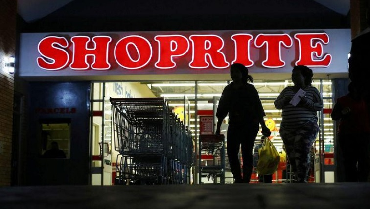
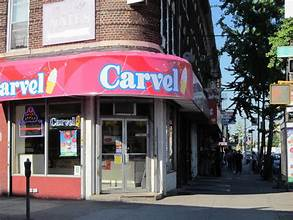

ShopRite is a great place to eat after school with many options like pizza, sushi and chinese. Overall it is a really good spot.
Carvel is a great spot on a hot summer day and if you and your friends just want a quick bite to eat. After eating carvels you will feel full and refreshed on some good ice cream.
